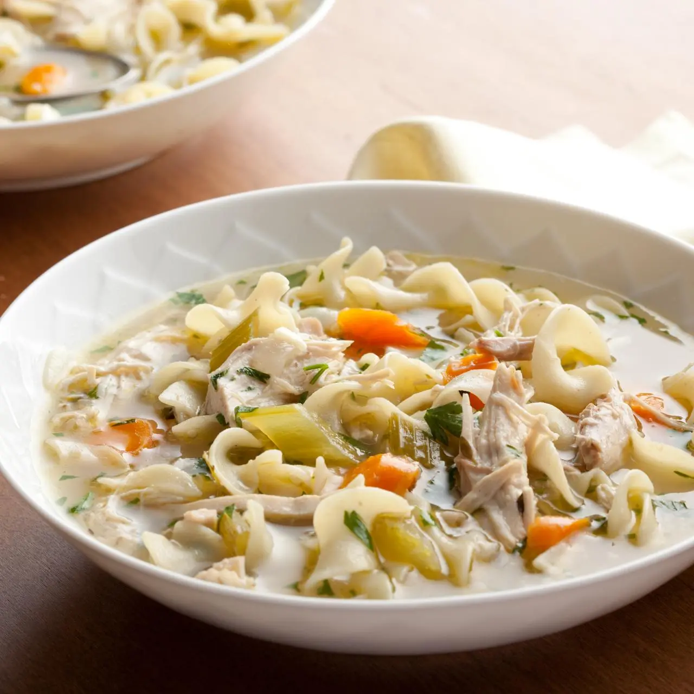

Chicken Noodle Soup

A cozy homemade chicken noodle soup with tender vegetables.
Ingredients
- Boneless chicken breasts or thighs
- Chicken broth
- Egg noodles
- Carrots, sliced
- Celery, sliced
- Onion, diced
- Garlic, minced
- Olive oil
- Thyme, salt, and pepper
- Fresh parsley
Steps
- Heat olive oil in a large pot over medium heat.
-
Add onion, carrots, and celery and cook for 5-7 minutes until
softened.
- Stir in garlic and thyme and cook for 1 more minute.
-
Pour in the broth, add the chicken, and bring to a boil. Lower the
heat and simmer for 20 minutes.
-
Take out the chicken, shred it with two forks, and return it to the
pot.
- Add the egg noodles and cook for 6-8 minutes until tender.
- Season with salt and pepper to taste.
- Top with fresh parsley and serve hot!